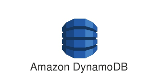
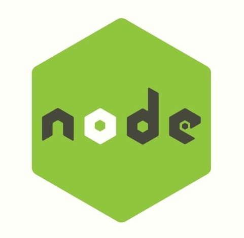
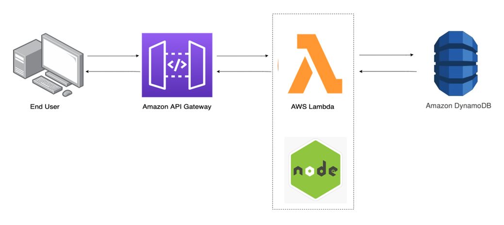

<!doctype html>
<html lang="en">
  <head>
    <!-- Required meta tags -->
    <meta charset="utf-8">
    <meta name="viewport" content="width=device-width, initial-scale=1">

    <!-- Bootstrap CSS -->
    <link href="https://cdn.jsdelivr.net/npm/bootstrap@5.0.1/dist/css/bootstrap.min.css" rel="stylesheet" integrity="sha384-+0n0xVW2eSR5OomGNYDnhzAbDsOXxcvSN1TPprVMTNDbiYZCxYbOOl7+AMvyTG2x" crossorigin="anonymous">
    <script crossorigin src="https://unpkg.com/react@17/umd/react.development.js"></script>
    <script crossorigin src="https://unpkg.com/react-dom@17/umd/react-dom.development.js"></script>
    <script src="https://unpkg.com/@babel/standalone/babel.min.js"></script>
    <title>Building UI components</title>
  </head>
  <body>
    <div class="container_fluid">
        <div id="content1"></div>
        <div id="content2"></div>
    </div>
    <script type="text/babel">
        class Content1 extends React.Component
        {
            render()
            {
                return <div> 
                    
                    <div class="row">
                        <div class="col-6">
                            
                            
                            
                            
                            <div class="text-center">
                            <button class="btn btn-primary m-auto" type="button" data-bs-toggle="collapse" data-bs-target="#collapseExample" aria-expanded="false" aria-controls="collapseExample">
                                The workflow
                            </button>
                            </div>
                        </div>
                        <div class="col-6">
                            <h1 class="display-5">AWS Lambda</h1>
                            <p>It is the computing service that runs code in response to events and
                                automatically manages the computing resources required by that code.
                            </p>
                            <h1 class="display-5">AWS DynamoDB</h1>
                            <p>It is a NOSQL database service that seamlessly integrates with AWS Lambda 
                                and Amazon API gateway besides other services.
                            </p>
                            <h1 class="display-5">Amazon API gateway</h1>
                            <p>
                                An API acts as the doorway for applications to access data, the business logic and the functionality such as
                                 implementation of various features from the backend services such as the AWS Lambda and AWS DynamoDB.
                            </p>
                            <h1 class="display-5">Node.js</h1>
                            <p>
                                A powerful, open-source, cross-platform, back-end JavaScript runtime environment that supports  
                                 &nbsp;<b>asynchronous</b> form of communication. Node. js uses an event-driven, non-blocking I/O model that makes it lightweight and efficient, 
                                perfect for data-intensive real-time applications that run across distributed devices.
                            </p>
                            
                        </div>
                        <div class="row">
                            <div class="col">
                                <div class="collapse" id="collapseExample">
                                <div class="card card-body">
                                    <h1 class="display-5">The workflow</h1>
                                    <p>
                                        The client's HTTP requests are routed by the API gateway which could be configured to trigger respective
                                         functionality in the lambbda functions present in AWS Lambda whcih inturn could communicate with the AWS DynamoDB
                                         and perform <b>CRUD</b> operations. 
                                    </p>
                                    
                                </div>
                                </div>
                            </div>
                        </div>
                    </div>
                    </div>
                ;
            }
        }
        ReactDOM.render(<Content1/>, document.getElementById('content1'));
    </script>
    <!-- Optional JavaScript; choose one of the two! -->

    <!-- Option 1: Bootstrap Bundle with Popper -->
    <script src="https://cdn.jsdelivr.net/npm/bootstrap@5.0.1/dist/js/bootstrap.bundle.min.js" integrity="sha384-gtEjrD/SeCtmISkJkNUaaKMoLD0//ElJ19smozuHV6z3Iehds+3Ulb9Bn9Plx0x4" crossorigin="anonymous"></script>

    <!-- Option 2: Separate Popper and Bootstrap JS -->
    <!--
    <script src="https://cdn.jsdelivr.net/npm/@popperjs/core@2.9.2/dist/umd/popper.min.js" integrity="sha384-IQsoLXl5PILFhosVNubq5LC7Qb9DXgDA9i+tQ8Zj3iwWAwPtgFTxbJ8NT4GN1R8p" crossorigin="anonymous"></script>
    <script src="https://cdn.jsdelivr.net/npm/bootstrap@5.0.1/dist/js/bootstrap.min.js" integrity="sha384-Atwg2Pkwv9vp0ygtn1JAojH0nYbwNJLPhwyoVbhoPwBhjQPR5VtM2+xf0Uwh9KtT" crossorigin="anonymous"></script>
    -->
  </body>
</html>